Projects
Electrical & Instrumentation Projects

Assessment and Repair of Various Automation Cards

Assessment and Repair of DCS PLTGU Priok
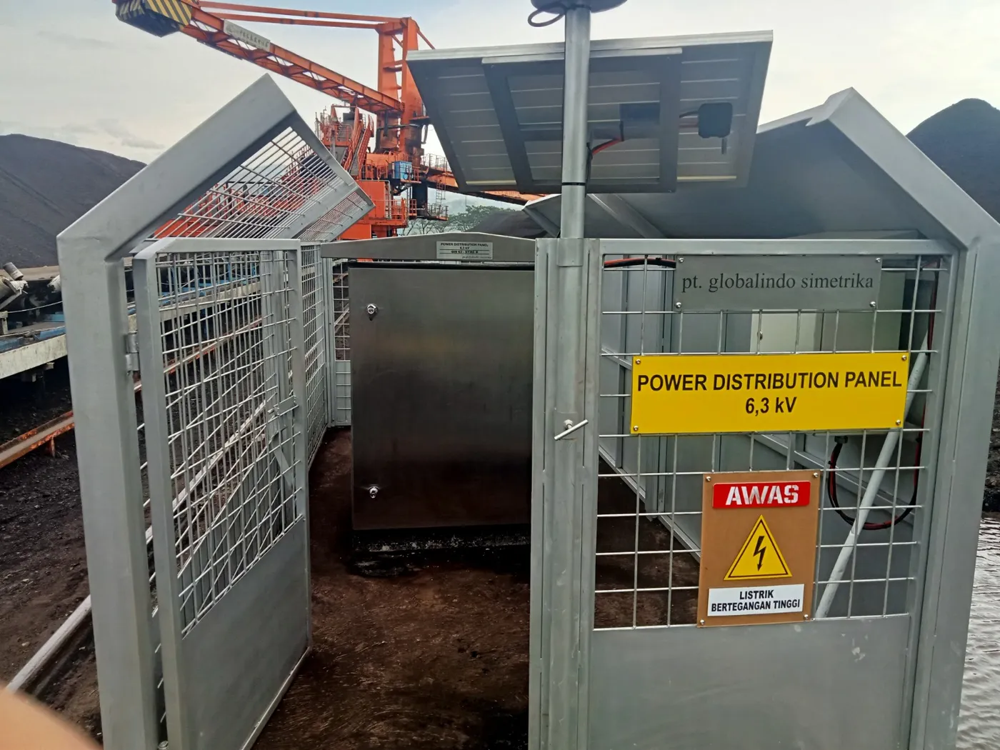
Revitalization of Panel 6.3 kV STRE PLTU Pelabuhan Ratu

Retrofit PLC Diverter Damper PLTGU Priok

Assessment and Repair Card ABB Procontrol 14

Procurement of Automation and Industrial Equipment
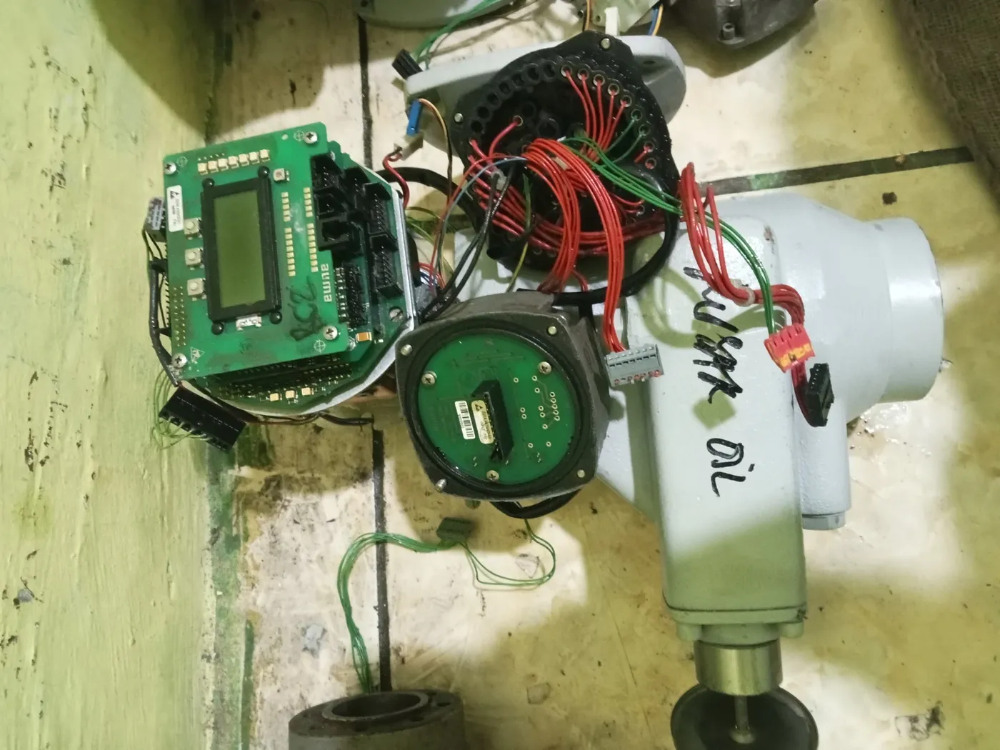
Assessment and Repair MOV Secondary Air PLTU Pelabuhan Ratu
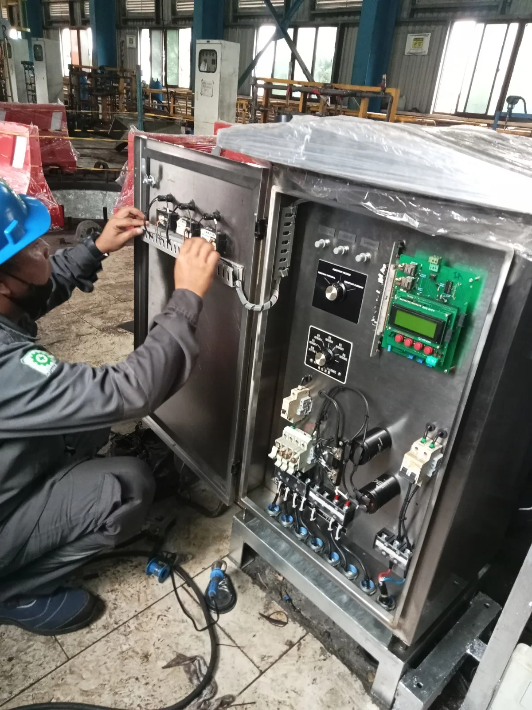
Retrofit Control System Cathodic Unit 1, 2 and 3 PLTU Lontar

Retrofit Sump Panel Pump Intake Area UBP Priok

Assessment and Repair Motortronics Soft Starter for 6kV Motor

Modification Control System of the Maneuver Damper at PLTGU Priok

Upgrade Excitation Breaker Major Inspection GT 3.2 UBP Priok
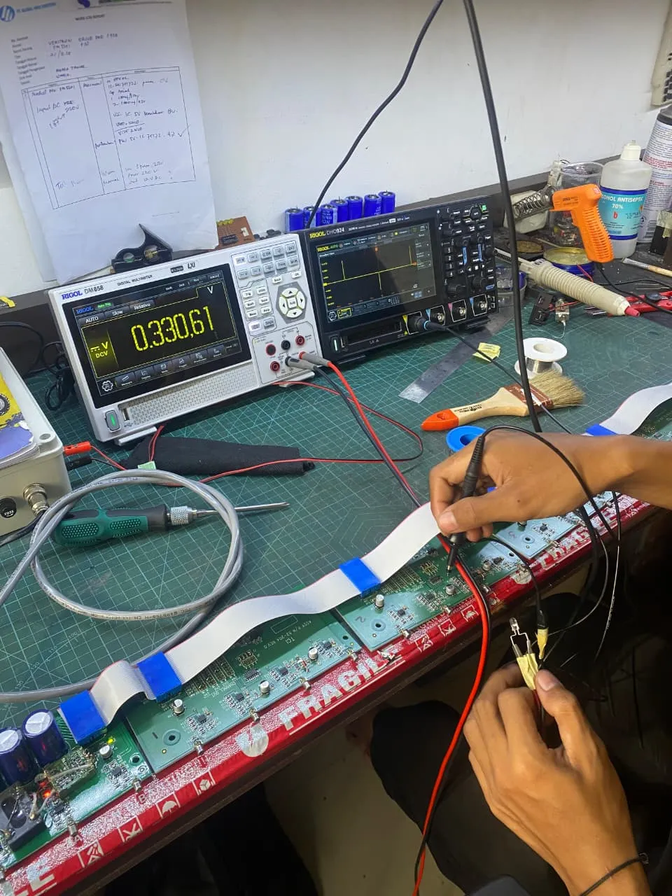
Upgrade System Control and VSD Grabber Ship Unloader PLTU Barru
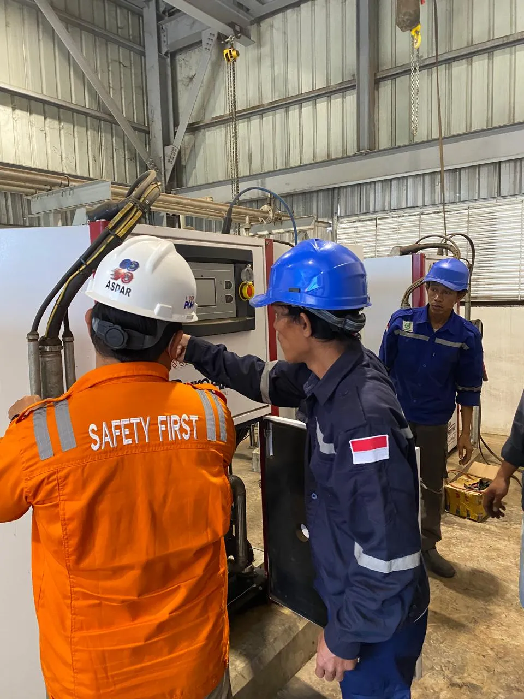
Gardner Denver Compressor Maintenance UBP Barru
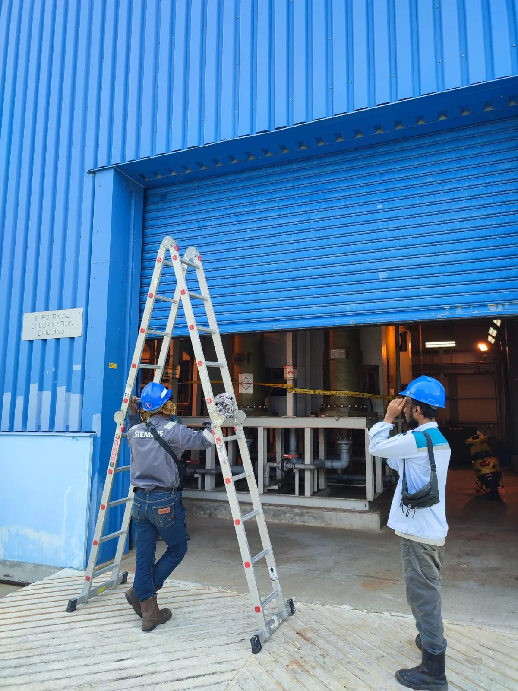
Routine Maintenance Services for Rolling Door Block 1-4 in 2024
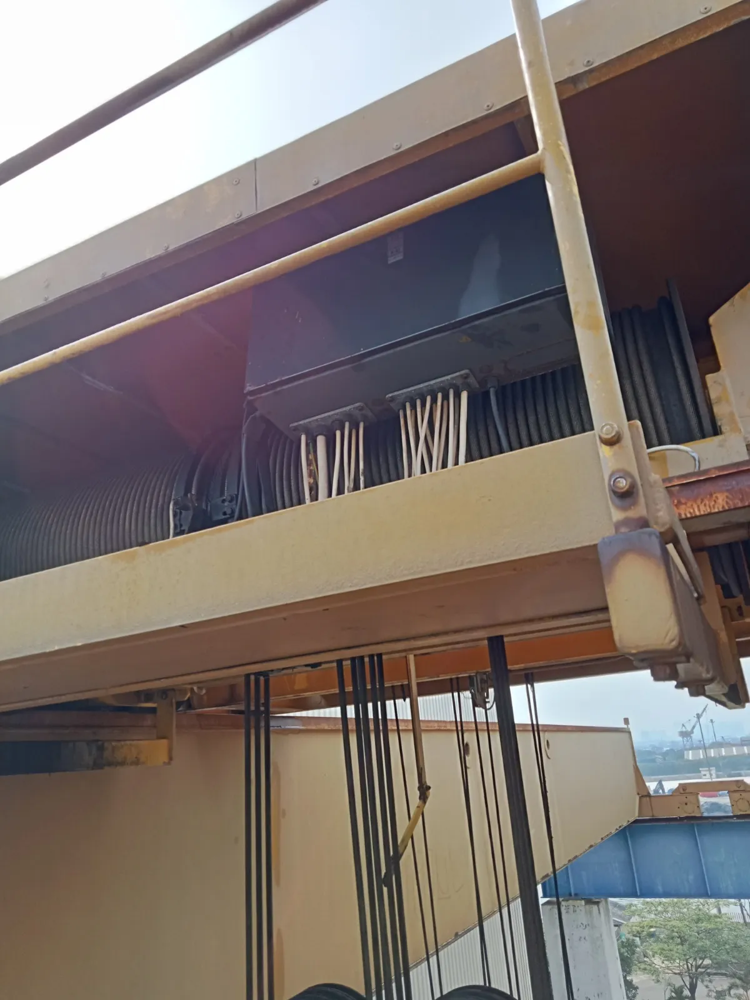
Revitalization and Repair Overhead Crane PLTGU Priok
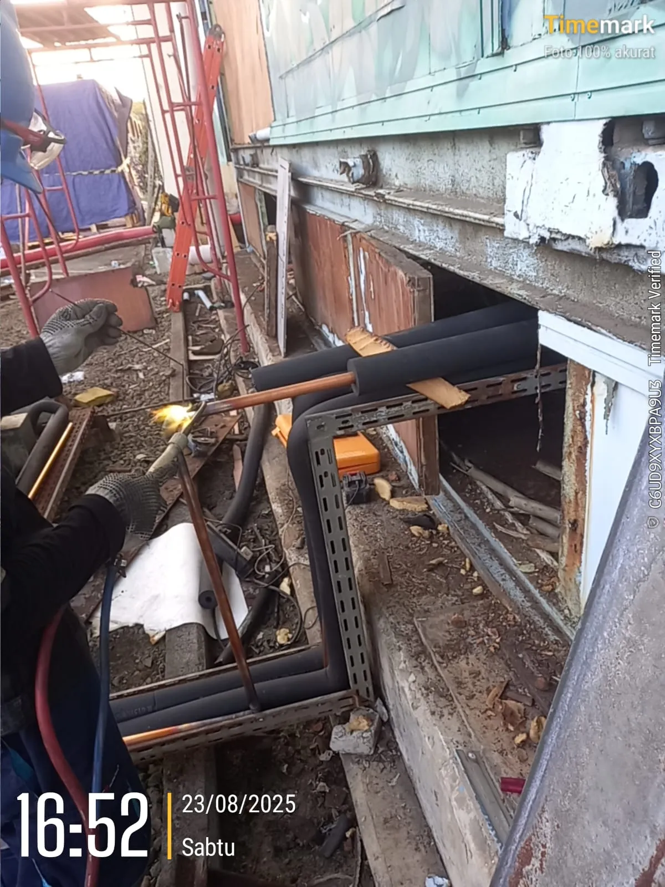
Installation Precision Air Handling Unit PLTGU Priok

Assessment and Repair Infrared Curtain Smelter Freeport
#19Electrical & Instrumentation
STRE 6.3 kV Cable Replacement PLTU Pelabuhan Ratu
#20Electrical & Instrumentation
Ship Unloader Assessment and VSD Repair PLTU Pelabuhan Ratu
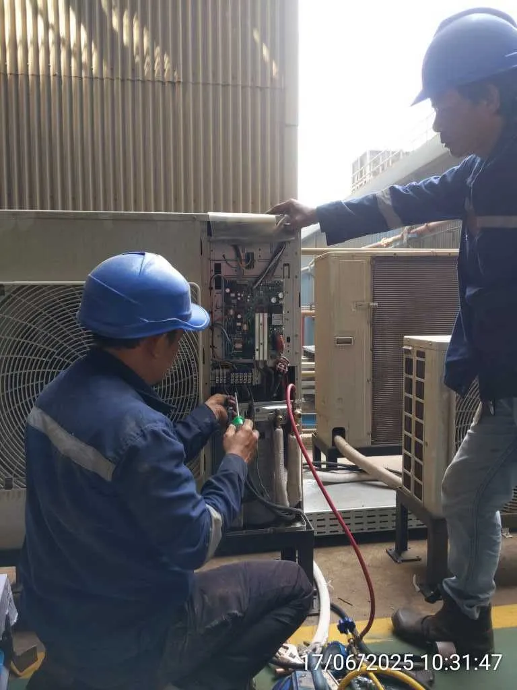
Upgrade Air Handling Unit System PLTU Pelabuhan Ratu

Upgrade Control Room Overhead Crane PLTU Lontar
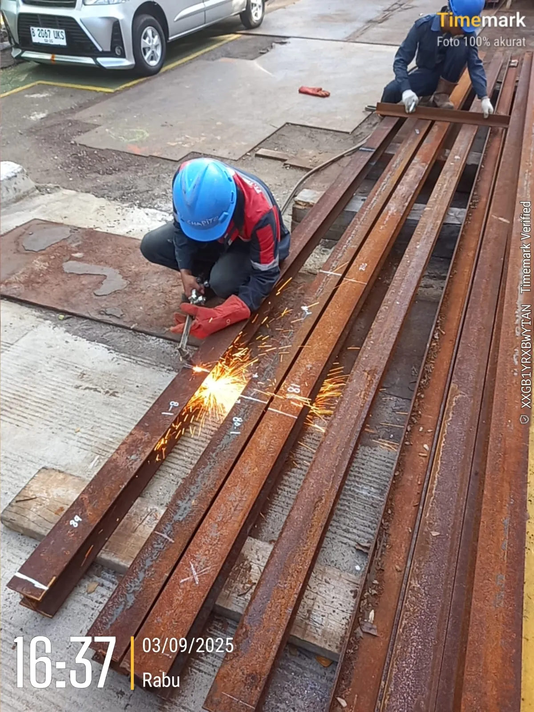
Upgrade Construction Lifting Tool HRSG PLTGU Priok

Overhaul Compressor PLTU Barru
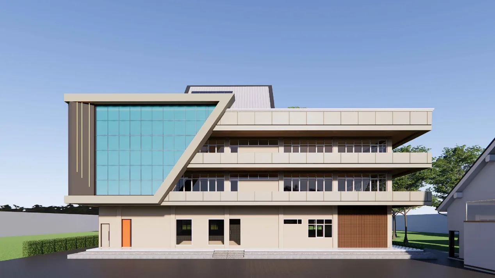
Priok PLTGU Administration Building Facade Design Services

Construction of the Jatigede Hydropower Plant Mosque
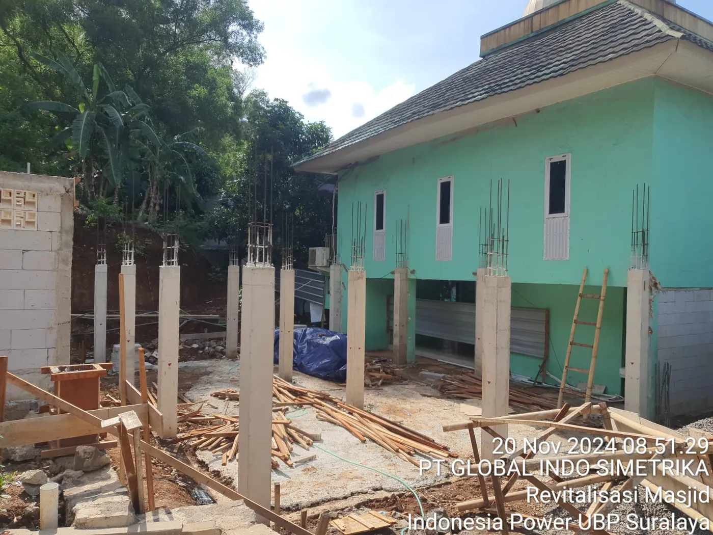
Revitalization of the Banten 1 Suralaya PLTU Mosque

Canopy Installation & Landscaping Services and Official Residence Security in 2025
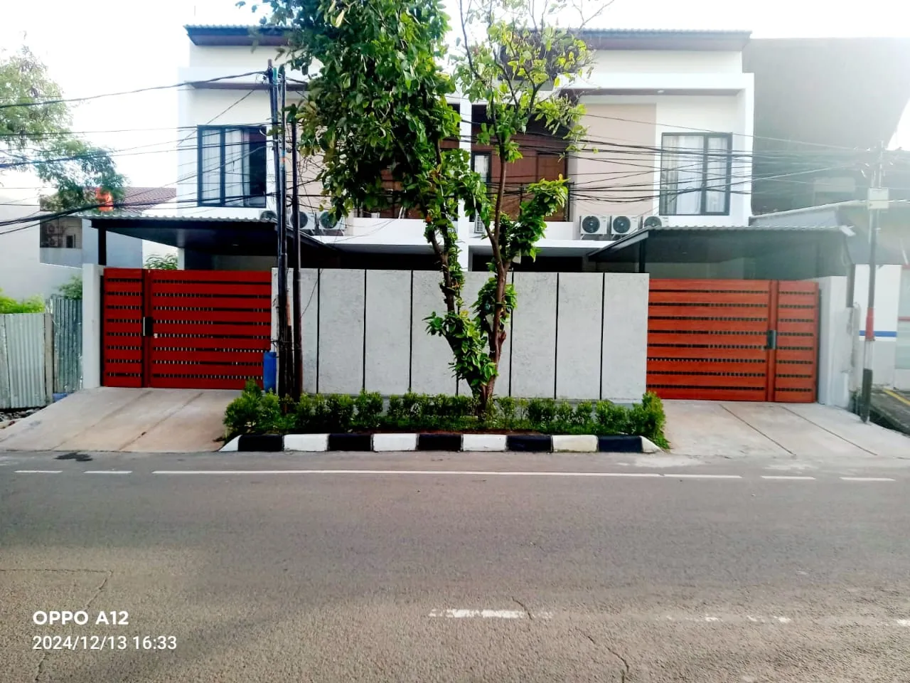